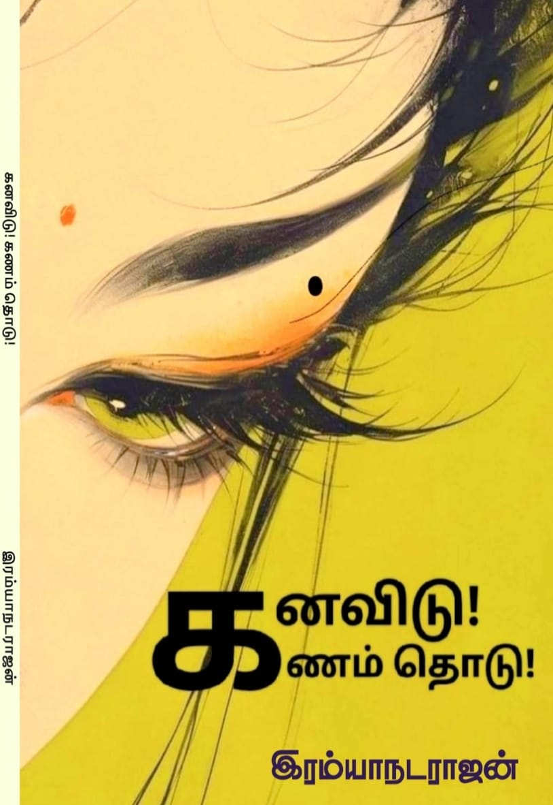

ஆத்தாடி பாவாட

சனி ஞாயிறோடு திங்களும் வீட்டில் தூங்கிவிட்டுச் செவ்வாய்க்கிழமை சீக்கு வந்த கோழி போல் தலையைத் தொங்கப் போட்டுக் கொண்டிருந்தேன் வகுப்பின் முதல் பெஞ்சில். பின்னால் இருந்து முதுகைத் தட்டி நடராஜன் கேட்டான் எலே மணி என்னல ஆச்சு வெள்ளிக்கிழமை நல்லா தானே போன.. ஏதும் பேயக் கீயப் பார்த்துப் பயந்துட்டயா என்றான். முறைத்துப் பார்த்தேன் அவனை.
சரி சரி முறைக்காத இப்போ நிர்மலா டீச்சர் வரப் போறா காய்ச்சல் கூடப் போவுது பாரு என்றான். ஆமா நிர்மலா டீச்சர் வந்தா கூடத்தான் செய்யும் என்றேன். கமுக்கமாகச் சிரித்துக் கொண்டோம் இருவரும்.
விடாத காய்ச்சலை விரட்ட சுடலைமாடன் முன்னும் மாலத்தேவர் முன்னும் கொண்டு நிறுத்தினாள் அம்மா தண்ணி கோரி எறிவதற்காக. முகத்தில் தண்ணீரை அள்ளி எறிந்து முட்டையைத் தலையைச் சுற்றி வண்ணாமடை அருகே வீசிவிட்டு வருவார் மாலத்தேவர். அப்படி அவர் முகத்தில் தண்ணீரை அடிக்கும் போது சிரித்துவிட்டேன் நான்.
ஏ.. மூதிக்கொண்ட என்ன பாத்தே சிரிக்கியா? உம்மவன ஏதோ முனி அண்டி இருக்கு லெச்சுமி என்று சொல்லிக் கொண்டே தண்ணீரை வேகமாக எறிந்து ச்சீ மூதி, ச்சீ மூதி ஓடு என்றார். பின்பு ஒருக்குத்து (கைப்பிடி) திருநீற்றை அள்ளி என் தலையிலும் வாயிலும் போட்டு நெற்றியில் பூசிவிட்டு முறைத்தார்.
அப்போது பார்த்தா யார் வீட்டிலோ ஒலித்துத் தொலைக்க வேண்டும்? "குளிக்குது ரோசா நாத்து தண்ணி கொஞ்சம் ஊத்து ஊத்து."
ஈரம் சொட்டச் சொட்ட என் கண்களில் இளித்தது முனி. இப்போது சிரிப்பை அடக்க முடியவில்லை. உச்சி முடியைப் பிடித்து விடுவார் என்று தலையைக் குனிந்து கொண்டேன்.
நெத்தியடி என்றொரு படம்... படத்தின் நாயகி வைஷ்ணவியைப் பார்க்கக்கூடாத கோலத்தில் பார்த்துவிட்டு (அதென்ன பார்க்கக் கூடாத கோலம் பார்க்கக்கூடிய கோலம் தான்) காய்ச்சல் வந்து கிடப்பார் பாண்டியராஜன்.. அப்படித்தான் நானும் காய்ச்சல் வந்து கிடந்தேன் 'பிரசன்ட்டு' வீட்டில் போய் ஒளியும் ஒலியும்-ல் இந்தப் பாடலைப் பார்த்துவிட்டு.
முரளிங்குற ஒரு சின்னப் பயலும், குயிலிங்குற ஒரு செங்காந்தள் சிறுக்கியும் திரையில செஞ்ச அக்கப்போரை நான் இப்போது மீண்டும் நினைக்கக் காரணம் போன வாரம் ஏதோ ஒரு மூட் அவுட் சோகத்தில் இருந்த போது என் வீட்டு எருமை மாடு ஒன்று ஒரு பாட்டை அனுப்பிவைத்து "ஹெட்போன் போட்டு இதைக் கேளுடா நல்ல தத்துவப் பாட்டு மனசு சரியாகிவிடும்" என்றது.
நானும் ஹெட்போன் போட்டு பாடலை ஓடவிட்டுக் கண்ணை மூடினேன். அதே முனி மீண்டும் வந்து அண்டிக்கொண்டது இப்போது என்னை.
ரோசா நாத்து மேல காதல் ஊத்து சும்மா பொங்கும். அட ஆமாங்க சமீபத்தில் ரஜினிகாந்த் சொன்னது போல் ராஜா அரை பாட்டில் பீரை வாயில் ஊத்திக்கொண்டு பாடியதுதான் இந்தப் பாடல். நாமும் கொஞ்சம் ஊத்திக்கொள்வோம்.. அத்தனை கிறக்கம் தரும்.
"ஆத்தாடி பாவாட காத்தாட
காத்தாடி போல் நெஞ்சு கூத்தாட..."
கிராமத்துல குயிலி மாதிரி ஒரு பொண்ணைப் பாத்ததும், என்னை மாதிரி ஒரு காளைப் பயலுக்கு வர்ற முதல் வார்த்தை "ஆத்தாடி!". அது வெறும் ஆச்சரியம் இல்ல, ஒரு பிரமிப்பு. காத்துல அவ பாவாடை பறக்குறதப் பாத்ததும், இவன் நெஞ்சுக்குள்ள ஒரு காத்தாடி (பட்டம்) பறக்க ஆரம்பிச்சிருச்சாம்.
காத்துல ஆடுறது துணிதான், ஆனா அந்த அசைவுக்கு இவன் மனசுல கூத்து நடக்குது. பாவாடை ஆச்சே அப்படித்தான் இருக்கும். பேசாமல் இந்த ஜென்மத்தில் காற்றின் கண்களாகவும் கைகளாகவும் பிறந்து இருக்கலாம் என்று தோன்றுகிறது எனக்கு.
"குளிக்குது ரோசா நாத்து
தண்ணி கொஞ்சம் ஊத்து ஊத்து..."
சும்மா 'குளிக்குது பொண்ணு'ன்னு சொல்லாம, 'ரோசா நாத்து'ங்குறான். ஏன்னா, நாத்துங்குறது இப்பதான் நட்டு வெச்ச ஒரு இளமை. அதுவும் ரோசா நாத்துன்னா, அதுல மென்மையும் இருக்கு, முள்ளும் (வெட்கம்/கோபம்) இருக்கு. அந்த நாத்துக்குத் தண்ணி ஊத்துறதுங்கறது, அவளை இன்னும் செழிக்க வைக்குற காதல் பார்வை அது. நல்லா செழிக்கட்டும் தண்ணி கொஞ்சம் ஊத்து ஊத்தே ..
"அடி நாள் பார்த்து நான் வந்தேன் வீம்பாக
உன் பாவாடப் பூவில் நான் காம்பாக..."
இங்கதான் நம்ம பயலோட கள்ளத்தனம் வெளிய வருது. தற்செயலா வரலையாம் களவாணிப் பய, 'நாள் பார்த்து, வீம்பாக' வந்திருக்கான். அவ பாவாடையில போட்டிருக்குற பூவுக்கு, இவன் காம்பா மாறணுமாம்.
ஏலே, அவளே கிணத்தடியில தண்ணியில நனைஞ்சு தவிச்சுப் போயி நிக்கா, இவன் பாவாடைப் பூவுக்குப் பஞ்சாயத்து பண்ணிக்கிட்டு இருக்கான் என்று ஜொல்லு வடிய இதை எழுதிவிட்டுத் துண்டால் ஃபோனைத் துடைத்துப் பிழிந்தேன் அரை லிட்டர் ஜொல் அளவு குறையாமல் இருந்தது.
"உன் வீட்டில் இந்நேரம் ஆள் இல்லையே
ஓடாதே பெண்ணே நான் தேள் இல்லையே..."
பொண்ணுங்க பயந்து ஓடுனா, "நான் என்ன கடிக்குற தேளா, கடிக்காத ஆளுதான!" அப்படினு சொல்ற நெல்லை கிராமத்துக் குறும்பு வரி இது.. நினைத்தால் இனிக்கும் கரும்பு வரியும் இது.
அடுத்து வர்ற வரிகள்லதான் நம்ம ஆளு, வைரமுத்து விவசாயத்தையும் ரொமான்ஸையும் போட்டு உலுக்கு உலுக்குன்னு உலுக்கி இருக்கான் சும்மா புளியம்பழத்த உலுக்குற மாதிரி.
"அடி செவ்வாழையே யே
உன் வீட்டுச் செவ்வாழை
என் கைகள் பட்டாலே
குலை ரெண்டு தள்ளாதோ..."
சிலேடை சிரிக்கும் வரிகளைக் கேட்டுக்கொண்டே சிவந்த மேனியை வாழை இலையைக் கொண்டு இழுத்து மறைக்கும் குயிலியைக் கண்ணுக்குள் கொண்டு வந்தேன். என்ன சொல்ல..? ப்ப்பா... (அவ்வளவுதான் சொல்ல முடியும்).
இலையைக் கிழித்து இடைவெளி வழியே குயிலியின் முகம் பார்ப்பான் முரளி. நானும் கூட பார்த்தேன் (முகத்தைத்தான்). செவ்வாழைங்குறது அவளோட சிவந்த மேனி. அந்தச் செவ்வாழைக்கு, இவன் தொட்டா குலை தள்ளுமோன்னு ஒரு கேள்வி. பாக்குறது கிணத்தடியில குளிக்குற புள்ளைய, இதுல என்னடா விவசாய விழிப்புணர்வுப் பாட்டு ராஸ்கோல் பயல.
வடிவேலு சொல்ற மாதிரி இப்ப இந்த இடம்தான் ரொம்ப முக்கியமான இடம் ஆமா. இந்த இடத்துல நாம காட்சியைக் கொஞ்சம் கண் முன்னாடி கொண்டு வரணும். கிணத்தடியில கப்பி உருளத் தண்ணி இறைச்சு குளிச்சுக்கிட்டு இருக்கா நம்ம குயிலி. அந்த ஈரப் பாவாடை தாவணியில, பாதி வெட்கமும் பாதி குளிருமா நின்னுக்கிட்டு இருக்கா.
நம்ம முரளி பய, கண்ணுல ஒரு குறுகுறுப்போட அவளையே சுத்திச் சுத்தி வர்றான் குட்டி போட்ட பூன மாதிரி. ஒரு பக்கம் பாவம் அந்தப் புள்ள... தலைக்குச் சீயக்காய் போடுறதா, இல்லை இவன் பாடுற பாட்டுக்குத் தாளம் போடுறதான்னு முழிச்சுக்கிட்டு நிக்கும்.
சினிமாவுல மட்டும் ஏன் இந்தப் பொண்ணுங்க ஆத்துல, கிணத்தடியில குளிக்கும்போது, கரெக்டா ஹீரோ வந்து பாட்டுப் பாட ஆரம்பிச்சுடுறானுங்க? ஈரத் துணியில பொண்ணை நிக்க வெச்சு, இவன் செவ்வாழைக்குச் சிலேடை பேசுற அழகைப் பாத்தா, 'டேய் முதல்ல அந்தப் புள்ளைக்கு ஒரு துவாலையை எடுத்துப் போடுடா'ன்னு சொல்லத் தோணும்! ( வாய்க்குத்தான் சொல்லத் தோணும் மனசுக்கு இல்ல)
"மலர் மூடும் நிலை கொஞ்சம் விலகாதோ
அடி நாள் எல்லாம் தவம் செய்தேன் நழுவாதோ..."
இப்ப நேரா விஷயத்துக்கு வந்துட்டான். ஆமா பாயிண்ட் புடிச்சுட்டான் பய. அந்த மலரை மூடியிருக்குற நிலை (துணி/வெட்கம் அட இரண்டும் என்றாலும் நல்லாத்தான் இருக்கும்) விலகாதான்னு கேக்குறான். இதுக்காக நான் தவம் கிடக்குறேன்னு கிணற்றுக்குள் கயிற்றைப் பிடித்துத் தொங்கிக்கொண்டு ஒரு பில்டப் வேற.
"நீர் சொட்ட நின்றாலே ஜலதோஷம் தான்
நீ இங்குப் போடாதே பகல் வேஷம் தான்..."
அவ தண்ணில நனைஞ்சுக்கிட்டு, "அய்யோ போடா, யாராவது பாத்துடப் போறாங்க"ன்னு நடிக்குறத, இவன் ஈஸியா கண்டுபிடிச்சுட்டான். "தண்ணில நிக்கிறியே உனக்கு ஜலதோஷம் பிடிக்கும்... ஆனா, உனக்கும் என்னைப் புடிச்சிருக்கு, நீ போடுறதெல்லாம் பகல் வேஷம்டி சிறுக்கி"ன்னு சொல்றான்.
"நீ ரொம்ப தாராளம் தான்" என்று அவளின் மனதை (மனதை மனதை மனதை) எடைபோடும் அந்த வரிகளில்தான் கிணற்றடியில் வழுக்கி விழுந்தேன் நான்.
பாதி பாடலிலேயே வெட்கத்தை மூட்டைகட்டி அதே கிணற்றுக்குள் போட்டு விட்டு முரளியோடு கூட சேர்ந்து கிணற்றைச் சுற்றி துளசி மாடத்தைச் சுற்றி ஆட ஆரம்பித்து விடுவாள் குட்டச்சி குயிலி (ஸாரி தட்டச்சு ஸ்லிப்).
ருசி கண்ட பூனை சும்மா இருக்குமா என்ன.. யூடியூப் சன்னல் வழியாக முட்டக் கண்களை மூடாமல் எட்டிப் பார்க்கிறேன்.
இளம் பூஞ்சோலையே
உன் பூமேனி நான் பார்க்கும்
கண்ணாடி ஆகாதோ?
நாகம் போல நாக்கை நீட்டிக் குலவை இடுகிறாள் இப்போது குயிலி.
கழுத்தில் கை வைத்துப் பார்க்கிறேன் லேசாகச் சுடுகிறது. காய்ச்சல் வரும் போல இருக்கிறது.
— மணி அமரன்